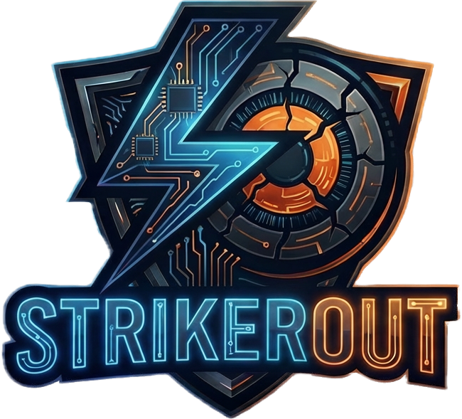

<!DOCTYPE html>
<html lang="es">
<head>
  <meta charset="UTF-8">
  <meta name="viewport" content="width=device-width, initial-scale=1.0">
  <title>かな練習 — Kana Practice</title>

  <!-- Apply theme before CSS loads to avoid flash of wrong theme -->
  <script>
    (function () {
      try {
        const cfg = JSON.parse(localStorage.getItem('kana_practice_v1') || '{}');
        if (cfg.theme === 'dark') document.documentElement.setAttribute('data-theme', 'dark');
      } catch (_) {}
    })();
  </script>

  <!-- Japanese font pool for font-rotation feature -->
  <link rel="preconnect" href="https://fonts.googleapis.com">
  <link rel="preconnect" href="https://fonts.gstatic.com" crossorigin>
  <link href="https://fonts.googleapis.com/css2?family=Noto+Sans+JP:wght@400;700&family=Noto+Serif+JP:wght@400;700&family=M+PLUS+Rounded+1c:wght@400;700&family=Sawarabi+Mincho&family=Zen+Kurenaido&display=swap" rel="stylesheet">

  <link rel="icon" type="image/png" href="img/strikeroutlogo.png">
  <link rel="stylesheet" href="css/style.css">
</head>
<body>
  <div id="wrapper">
    <div id="app">
      <!-- All screens are rendered here by render.js -->
    </div>

    <!-- Footer watermark — always at the very bottom, never overlapping -->
    <footer class="site-credit" aria-hidden="true">
      
      <span>Created by <strong>StrikerOut</strong></span>
    </footer>
  </div>

  <!-- Persistent controls (bottom-right, always visible) -->
  <div class="corner-controls">
    <button id="sound-toggle" class="corner-btn" title="Activar/desactivar sonido" aria-label="Sonido"></button>
    <button id="theme-toggle" class="corner-btn" title="Cambiar tema" aria-label="Cambiar tema"></button>
  </div>

  <!-- Load order: data → state → sound → game → render → init -->
  <script src="js/data.js"></script>
  <script src="js/sound.js"></script>
  <script src="js/state.js"></script>
  <script src="js/game.js"></script>
  <script src="js/render.js"></script>
  <script>
    document.addEventListener('DOMContentLoaded', () => {
      State.init();
      Render.screen();

      // ── Theme toggle ──────────────────────────────────────────
      const themeBtn = document.getElementById('theme-toggle');
      function syncTheme() {
        const dark = document.documentElement.getAttribute('data-theme') === 'dark';
        themeBtn.textContent = dark ? '☀️' : '🌙';
      }
      syncTheme();
      themeBtn.addEventListener('click', () => {
        const current  = document.documentElement.getAttribute('data-theme');
        const newTheme = current === 'dark' ? 'light' : 'dark';
        document.documentElement.setAttribute('data-theme', newTheme);
        State.setTheme(newTheme);
        syncTheme();
      });

      // ── Compact layout when virtual keyboard is open ─────────
      if (window.visualViewport) {
        window.visualViewport.addEventListener('resize', () => {
          const keyboardOpen = window.visualViewport.height < window.innerHeight * 0.8;
          document.documentElement.classList.toggle('keyboard-open', keyboardOpen);
        });
      }

      // ── Sound toggle ──────────────────────────────────────────
      const soundBtn = document.getElementById('sound-toggle');
      // Apply saved preference
      Sound.setEnabled(State.config.sound !== false);
      function syncSound() {
        soundBtn.textContent = Sound.isEnabled() ? '🔊' : '🔇';
      }
      syncSound();
      soundBtn.addEventListener('click', () => {
        const next = !Sound.isEnabled();
        Sound.setEnabled(next);
        State.setSound(next);
        syncSound();
      });
    });
  </script>
</body>
</html>
